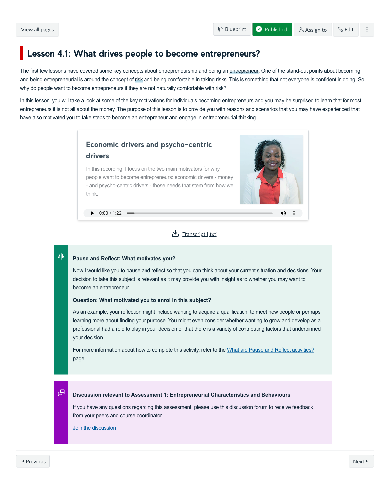
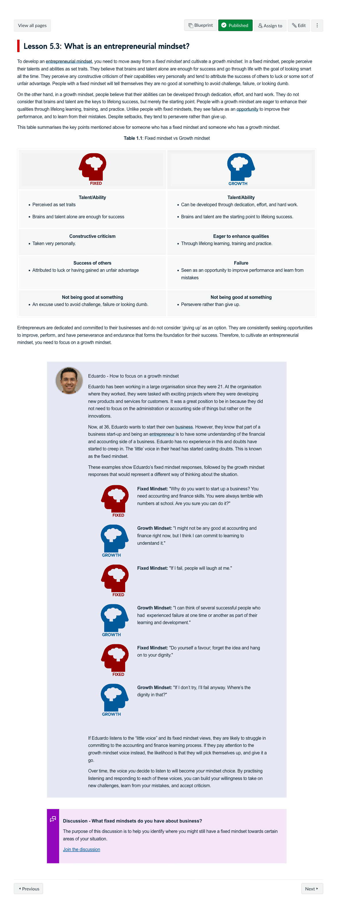
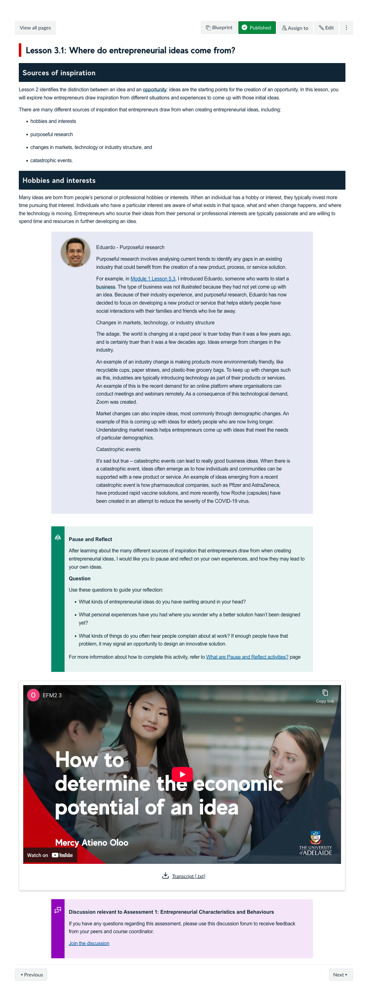
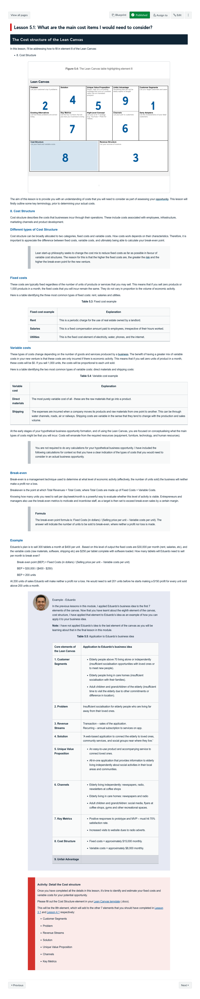
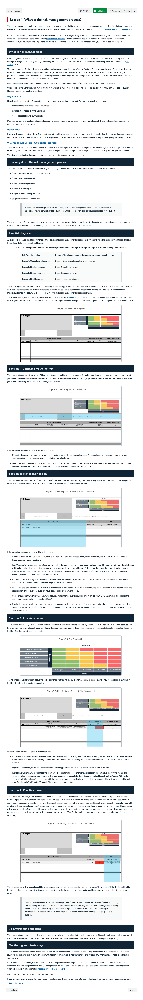

Course Description
This course focuses on developing new skills and cultivating an entrepreneurial mindset. These skills prepare students to create their own entrepreneurial career path, become a valued corporate team member, or use their enterprising skills within government or the not-for-profit sector. Students will understand the theoretical concepts behind the nature and importance of entrepreneurship, use a number of tools, frameworks and models to identify and assess opportunities, and engage in experiential learning activities to develop their entrepreneurial mindset.
Learning Outcomes
- Identify the difference between an idea and an opportunity.
- Assess the potential of an opportunity and determine its viability for practical, social and commercial implications.
- Examine entrepreneurial behaviour & characteristics associated with successful entrepreneurship.
- Illustrate how to attract resources including finances to exploit an identified opportunity.
- Identify how to manage intellectual property, legal structures, ethical issues and risks of a new venture.
- Prepare a feasibility report for an identified opportunity to assess its feasibility and sustainability.
Learning Experience
This course provides a general overview of entrepreneurship and to understand the entrepreneurial mindset. The course is designed to be skills centric and focussed on practical activities that enable learners to develop skills to create their own entrepreneurial career path. A key feature of the experience is journey of fictional students Abbey and Eduardo, who provide an ongoing worked example throughout the course, helping to explain, demonstrate and set expectations for learners and their work.
Topics
- The foundational elements to establishing an entrepreneurial mindset
- Ideas and opportunities
- Problem and customer confirmation
- From ideation to validation
- Lean start-up
- Legal and regulatory requirements for a new venture
- Stage 1 and Stage 2 of the risk management process
- Stage 3 to Stage 6 of the risk management process
- The Business Model and Resources
- Feasibility Report (A-C)
- Feasibility Report (D-G)
- The Final Preparation
Development Team
Mercy Oloo
Course Author
Collaborator
Stella Bachtis
Course Author
Lead
Sash Kertes
Learning Designer
Lead
Sinead Coulter
Learning Designer
Assessments
-
Entrepreneurial charachterisitics and behaviours
Short Response Questions
Learners complete a short report that identifies common characteristics and behaviours of entrepreneurs. They use this information to discuss the characteristics and behaviours theuy need to develop for their own entrepreneurial mindset.
15%
-
Concept statement
Problem Solving
Learners will conduct research to confirm they have identified a problem and to come up with a concept statement that clearly articulates how you would solve the problem with a hypothetical business opportunity.
20%
-
Risk Assessment
Problem Solving
Learners identify potential internal and external risks to their hypothetical business opportunity and determine an appropriate response to the risks.
30%
-
Feasibility Report
Report
By conducting a thorough Feasibility Report learners can identify whether their hypothetical business opportunity is a viable business venture. This report focusses on their ability to analyse the business in context and success is based on this rather than the viability of their venture.
35%
Snapshots







Learning Resources
-
What is an entrepreneurial mindset?